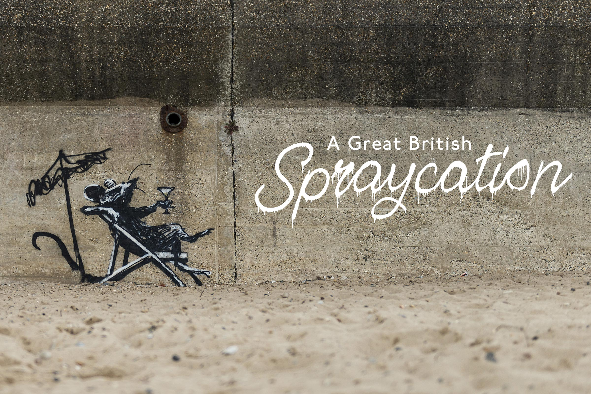
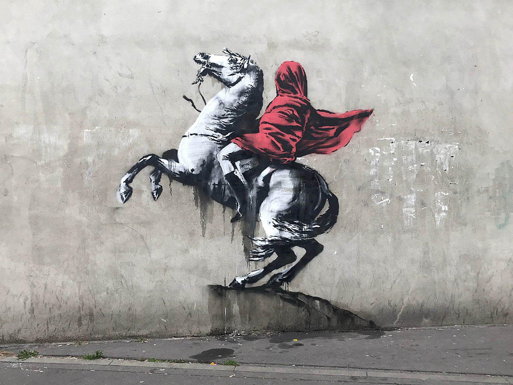
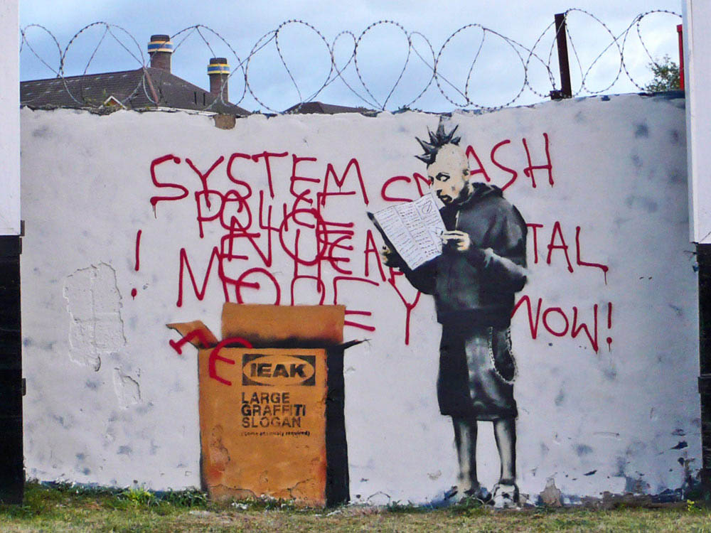
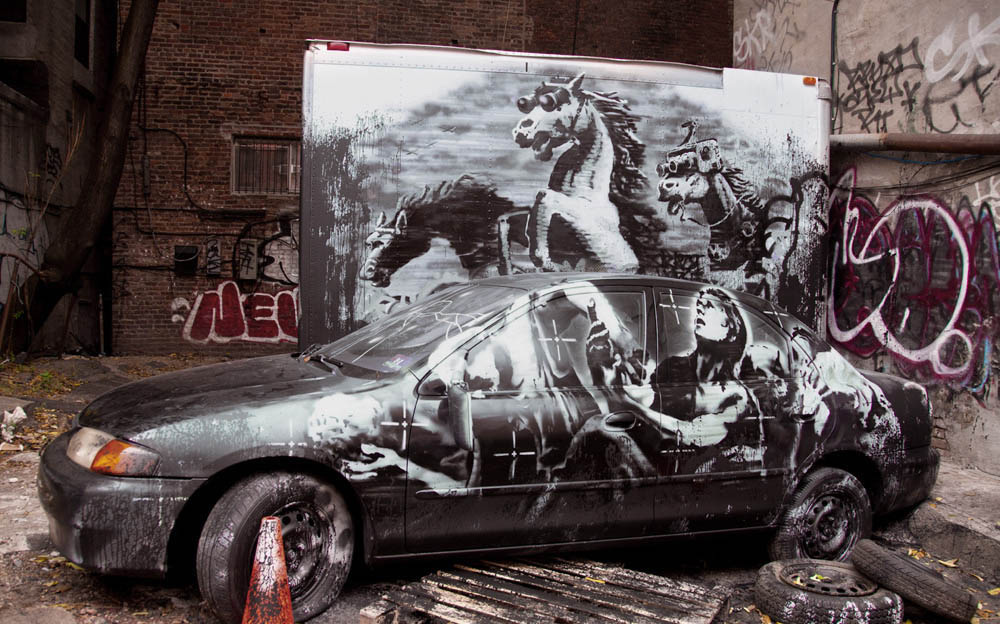

There is no confirmed answer to this question.
Banksy to this day remains elusive. Any artist interviews the artist has participated in have been conducted via email or through audio tapes in which his voice has been altered. Ranging from small utilitarian street objects to billboard-sized murals, Banksy has taken graffiti to a new dimension.
There has been wide conjecture of who he is.
For many years rumors have spread that Banksy is either Robin Gunningham, an artist out of Bristol, or Rob Nel Naja, a member of the band Massive Attack. These guesses come in part as DJ Goldie, a British music producer, referred to Banksy as “Rob” in a 2016 interview. Banksy’s visual vocabulary and its development over the years begins with markings on public (or private) surfaces illegally and secretly.
He sat for a rare in-person interview in 2003.
It has been 19 years since Banksy has done an in-person interview. In 2003 he sat for an interview with The Guardian, in which writer Simon Hattenstone, described him as: “white, 28, scruffy casual - jeans, T-shirt, a silver tooth, silver chain and silver earring.”
Love is in the bin was a first ever. When it last sold at Sotheby's in October 2018, the piece was known as “Girl With Balloon.” Just as an anonymous European buyer made the winning bid, a hidden shredder embedded in the frame by Banksy whirred to life, leaving half the canvas hanging from the frame in strips. The crowd GASPED! Recently the piece fetched 18.5 million pounds, a record for the artist.
Immediately recognizable and instantly touching, Girl with Balloon is one of Banksy's best-known images. It depicts a young child who reaches out to a red heart-shaped balloon that is just out of reach. It is ambiguous as to whether she has intentionally released the balloon, evoking an endearing image of childhood freedom, or if she has accidentally lost her grip on the dangling string and is watching in despair as the balloon slips into oblivion. Banksy paired it with the phrase 'there is always hope'. Because of this the work has come to represent both childhood innocence and the importance of maintaining hope, even in the darkest of times.
With its 4 meters width, the gigantic Devolved Parliament, in which chimpanzees replace politicians in the House of Commons, Banksy's largest known canvas. Despite being painted in 2009, many commentators have drawn comparisons to current-day politics, and the chaos witnessed in the House of Commons over Brexit.
Often critical of big businesses, corporations, police and government, Banksy's work has been found on the sides of buildings, billboards, and city walls from London to New York, from Jamaica to the Gaza Strip. He has taken on giant corporations such as Disney, McDonald's and Tesco: he has reworked Leonardo, Monet and Van Gogh.
He has made it clear that he does not want the celebrity he has earned for his immense talent, insead - he chooses to have his work speak for itself. Perhaps because he feels his identity might distract or detract from what the focus should be: his work, and the statements he is making.
His works have addressed everything from the absurdity of war, police brutality, social inequality, as well as political tensions, climate change, consumerism, human and animal rights issues, and Brexit.
11/14/22 - Three days after Banksy, debuted his latest mural on Instagram, spray painted on the wall of a bombed building in the city of Borodianka, Ukraine. The anonymous street artist confirmed that he completed seven new works in Ukraine in total. One artwork depicts a little boy, wearing a martial arts uniform tied with a black belt, flipping a grown man onto his back. Some have connected the image to Russian President Vladimir Putim, whose honorary black belt was revoked earlier this year.
Previous to his recent work in the Ukraine, the last major series that Banksy has worked on was called the “Great British Spraycation,” which saw the enigmatic artist leave behind his signature pop art commentary at sites across a number of British coastal towns. Unlike the average “tag”, Banksy's stencils are pre-planned, prepared and perfectly positioned. Banksy is adept at recycling stuff left lying around - a bicycle tire, a pile of sand, or a corrugated metal sheet that doubles as a boat to convey a powerful environmental warning, as the children bail out the sinking ship.